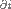
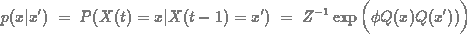
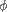
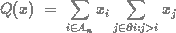

Another variation of the Ising model is the
Spatio-Temporal Interaction Model (STIM) which is defined as
follows. n2 sites are
located in a square lattice, An, where each
site, i, possesses a random state, Xi,
which takes its values in { -1, 1 }. The time dimension
is added by denoting the state at site i at time t
by xi(t) and the random pattern variable by
Xi(t). For simplicity the lattice
configuration at time t is denoted by x(t) and
the corresponding random variable by X(t). To express
the spatial dependence there is a neighbourhood relation.
Also in the STIM, the neighbourhood of a site i
are the four closest sites i-1, i+1, i-n,
and i+n and the set of neighbours to i is
denoted by . The lattice variables have
the conditional distribution function

where
Z-1
is a normalising constant

is the spatio-temporal interaction
parameter

which is conditionally minimal sufficient
for given that
X(t-1)=x'.
Positive values of both makes each site
more likely to be the same as its neighbour and the amount of
interaction at time t more likely to be the similar to
the corresponding amount in the previous pattern at time
t-1. Negative both makes neighbours
more likely to be of opposite values of each other as well as
the amount of interaction at time t more likely to be
opposite of the previous amount at time t-1.
For inference about , one may be interested
in the conditionally sufficient statistic . At each time t the lattice
consists of a Markov field according to the Ising model with
zero external field, conditional on the previous field at time
t-1 and similarly to the Ising dynamic model, the sequence
of patterns, {X(1), X(2), X(3), ...
}, is a Markov chain. However, in contrast to the Ising
dynamic model, the map Q preserves the Markov property, i.e.
the sequence of random variables {Q(X(1)), Q(X(2)), Q(X(3)),
... } is also a Markov chain. This property is very
useful for inference purposes about .
Below is a perfect simulation (see Propp and Wilson, 1996),
of the model with interaction parameter =
0.2.